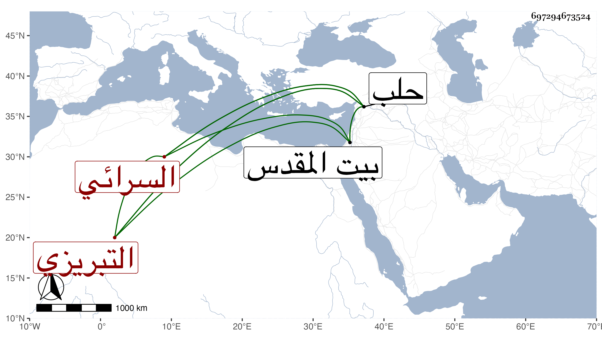

0902Sakhawi.DawLamic.ITO20230111-ara1.EIS1600.697294673524
Biography ID: 697294673524
551
حسين بن حامد بن حسين السرائي التبريزي ويلقب بيرو . ذكره ابن خطيب الناصرية فقال المقرىء نزيل حلب كان عالما بالقراءات السبع فاضلا في الفقه دينا ورعا عاقلا ساكنا كان يقرىء القراآت بجامع منكلي بغا الشمسي وهو من ذوي الأموال يتجر ، رأيته بحلب واجتمعت به ولم آخذ عنه شيئا ثم رحل إلى القدس فسكنه حتى مات في سنة إحدى ، وفي ترجمة أبي المعالي محمد ابن أحمد بن علي بن اللبان من طبقات ابن الجزري إن ممن قرأ عليه الإمام شمس الدين بيرو السرائي وهو ملتئم مع ما هنا ولكن ذكر في الأسماء ما يحتاج لمراجعة من أصل الذهبي وكذا تلا بيرو هذا بالسبع على الأمين عبد الوهاب بن يوسف بن السلار تلا عليه السبع مع قراءة الشاطبية والرائية والتيسير الشمس الحلبي قاضي الجن .
